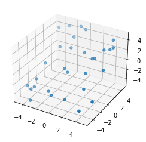

Integrating a generic, python tool in pyiron (Level B, recommended approach)¶
If we need to repeatedly, perform a combination of processes to return a value, a plot, etc., it might make sense to create a Job class for it. Here, we create a simple workflow using available python tools for a specific problem.
Problem:
we are given as an input the positions of a some particles, plus a energy constant.
the goal of the workflow:
calculate the mean harmonic energy
return a 3D plot of the cloud of particles.
from pyiron_base import PythonTemplateJob, DataContainer
import numpy as np
import math
import matplotlib.pyplot as plt
class harmonicEnergy(PythonTemplateJob):
def __init__(self, project, job_name):
super(harmonicEnergy, self).__init__(project, job_name)
self.input=DataContainer(table_name='inputs')
def read_input(self, file_name):
self.input.read(file_name)
def calc_mean_harmonic_energy(self):
counter=0
d2=0
for i,p1 in enumerate(self.input.positions.to_builtin()):
for p2 in self.input.positions.to_builtin()[i+1:]:
p2_vec=np.array(p2)
p1_vec=np.array(p1)
d = p2_vec - p1_vec
d_val = math.sqrt(np.dot(d, d))-self.input.equilibrium_lengh
d2+=d_val**2
counter+=1
self.avg_d2=d2/counter
self.avg_energy=self.input.energy_constant*self.avg_d2
def scatter_plot(self):
x = [ self.input.positions.to_builtin()[k][0] for k in range(0, len(self.input.positions.to_builtin()))]
y = [ self.input.positions.to_builtin()[k][1] for k in range(0, len(self.input.positions.to_builtin()))]
z = [ self.input.positions.to_builtin()[k][1] for k in range(0,len(self.input.positions.to_builtin()))]
fig = plt.figure()
ax = fig.add_subplot(projection='3d')
ax.scatter(x, y, z, marker='o')
# This function is executed
def run_static(self):
self.calc_mean_harmonic_energy()
with self.project_hdf5.open("output/generic") as h5out:
h5out["avg_harmonic_energy"] = self.avg_energy
self.status.finished = True
Exercise 1:¶
Create a project and a job of type harmonicEnergy, which reads in input.yml and calculates the mean harmonic energy. Also create the 3d scatter plot of the particles.
from pyiron_base import Project
pr=Project("python_demo")
pr.remove_jobs_silently(recursive=True)
job=pr.create_job(job_type=harmonicEnergy, job_name='harmonic_energy')
job.read_input('input.yml')
job.run()
The job harmonic_energy was saved and received the ID: 117
job.input
DataContainer({'energy_constant': 0.1, 'equilibrium_lengh': 5.0, 'positions': DataContainer([DataContainer([3.137544466813198, -1.980814354656597, -4.197124310786901]), DataContainer([-2.6890042295246017, 1.8501549920906113, 0.023231338665228307]), DataContainer([-0.21694792294922394, 4.52462902567602, 4.747091691273553]), DataContainer([-1.3730328920596602, 3.345133072507805, -2.3966747431507196]), DataContainer([2.7537916983387056, 1.6128594035836397, 4.1022385836569]), DataContainer([-4.670628783489295, -3.4027456446008153, -1.2682900977875233]), DataContainer([-0.024009392615576886, -0.7000473804666187, 0.2955825557994345]), DataContainer([3.8025392209805897, -4.370649970003432, -0.20762411583497542]), DataContainer([-2.788465316883393, 4.449722862556019, -3.1178268869918546]), DataContainer([2.4406679645582585, -0.2785484738255857, -2.6818032676754067]), DataContainer([-4.11093749753287, 4.011545224548557, -2.570528164948338]), DataContainer([-3.90282132805013, -3.629025741377605, 3.5767107804003277]), DataContainer([-0.6603668770271973, -0.3738802422299585, -4.474830175227286]), DataContainer([-3.599320542923353, -3.2866771577781995, 1.6203959332493252]), DataContainer([-3.254427885686062, -4.83684975815674, -3.050720157376998]), DataContainer([4.559778458092227, 3.3162849367287706, 0.8296556544285298]), DataContainer([-1.3771992590308124, -3.314388219124896, -4.868978060931331]), DataContainer([-0.7667646728476152, -3.634026833467291, -3.557807258303818]), DataContainer([-3.840032170008806, -2.371455901138173, -0.8652606412581676]), DataContainer([2.450467252735109, 1.5039459711659404, 1.5965086685722971]), DataContainer([1.0665140929839154, 1.933109799659988, 2.873831669544165]), DataContainer([4.557345443186108, 0.6008966725808573, -4.546943944719759]), DataContainer([1.304244805099275, -3.6588428501055805, 2.6354386977288655]), DataContainer([4.127633873431494, 4.153622577255408, 0.19760967659106043]), DataContainer([4.24818439306128, 3.0106421564274797, -2.21056252879802]), DataContainer([4.9603663224278876, -3.0114336940398467, -3.5017132143213905]), DataContainer([-1.096816080720917, 4.748295541176644, -0.7475030725732985]), DataContainer([3.486410382195457, 2.799878737647451, 0.03875730664732213]), DataContainer([-1.0861463281898032, 2.0753437593040793, -1.5079869060271447]), DataContainer([-3.626802831170436, -0.4060441273874451, -2.1490167201721935])])})
pr.job_table()
| id | status | chemicalformula | job | subjob | projectpath | project | timestart | timestop | totalcputime | computer | hamilton | hamversion | parentid | masterid | |
|---|---|---|---|---|---|---|---|---|---|---|---|---|---|---|---|
| 0 | 117 | finished | None | harmonic_energy | /harmonic_energy | /home/muhammad/ | workspace/tmp/PMD-workflow-workshop2/2_customized_job/python_demo/ | 2021-04-29 03:31:10.870275 | None | None | pyiron@cmleo14#1 | harmonicEnergy | 0.4 | None | None |
job
{'groups': ['input', 'output'], 'nodes': ['HDF_VERSION', 'NAME', 'TYPE', 'VERSION', 'server', 'status']}
job['output/generic/avg_harmonic_energy']
0.9899414339265156
job.scatter_plot()
